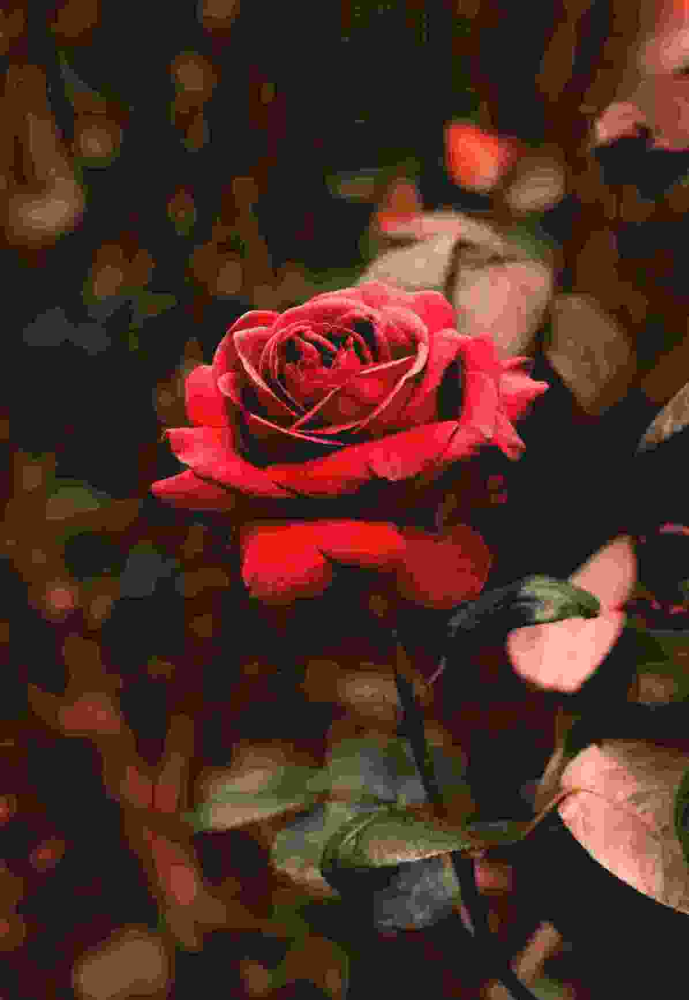
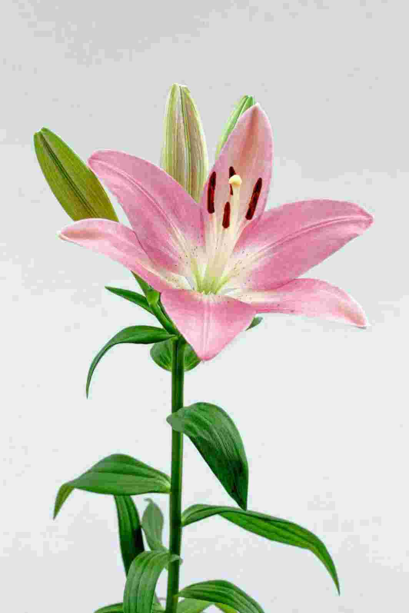
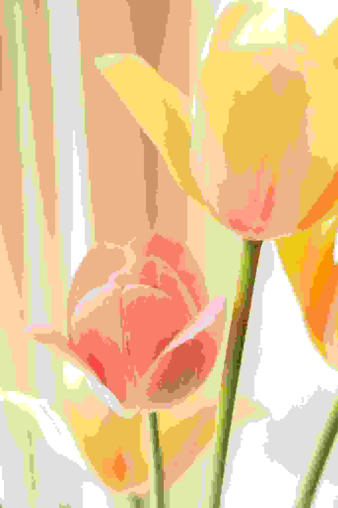
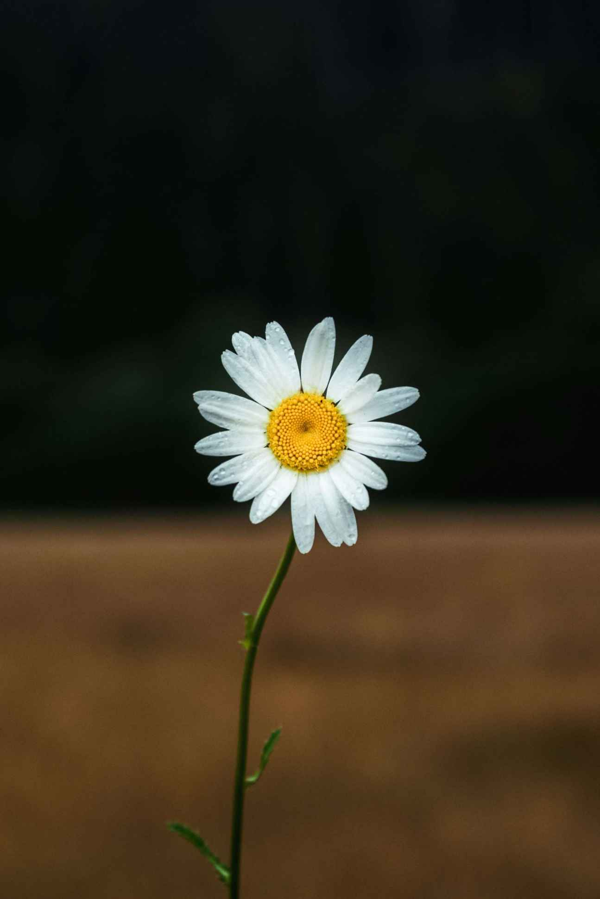
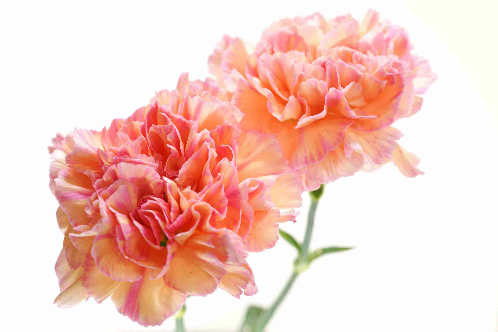

Rose
Roses often suggest love, remembrance, tribute, or public honor. In reporting, they may appear in memorials, ceremonies, and emotional human-interest stories.
This gallery highlights flowers that can support identification, symbolism, and storytelling in journalism. Each example below includes a short explanation of how the flower may function visually or symbolically in a story.

Roses often suggest love, remembrance, tribute, or public honor. In reporting, they may appear in memorials, ceremonies, and emotional human-interest stories.

Lilies are often associated with peace, mourning, and reflection. They work well in stories involving solemn events, faith, or remembrance.
Sunflowers can communicate hope, resilience, and warmth. They are strong visual elements in stories about recovery, community, or rural life.

Tulips often symbolize renewal and seasonal change. They fit well in stories centered on spring, transition, and fresh beginnings.

Daisies suggest simplicity, innocence, and natural beauty. They can help create a gentle and approachable tone in a visual story.

Carnations often represent gratitude, devotion, and remembrance. They are commonly seen in ceremonies, tributes, and formal arrangements.
A flower image should be interpreted by looking at more than just the flower itself. Consider the event, the setting, the color of the flower, and where it appears in the scene. A flower placed at a vigil may carry a very different meaning than the same flower used in a celebration.
Petal Path helps readers identify flowers, understand their meanings, and see how they can be used as journalistic tools. Through recognition, symbolism, and visual interpretation, flowers become more than decoration—they become part of the story.